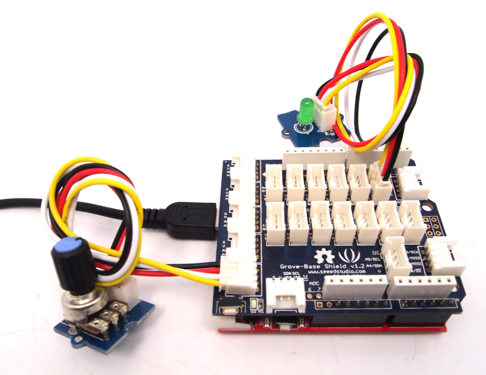

Connect the LED module to the D1/D2 Digital I/O jack, like it was in Projects 1 and 2.
Arduino Pin D1 powers the LED Grove's SIG connector, and Arduino Pin D2 connect to the LED Grove's NC connector.
Connect the Potentiometer module to the Analog A0/A1 input jack.
The Potentiometer module produces an analog voltage on its SIG output, which is connected to Arduino A0 analog input on the A0/A1 input jack.

Now upload the following Arduino sketch:
// Project Three - Analog Input
//
void setup()
{
pinMode(1, OUTPUT);
}
void loop()
{
digitalWrite(1, HIGH);
delay(analogRead(0));
digitalWrite(1, LOW);
delay(analogRead(0));
}
The maximum delay value is 1023, as this is the upper limit of the value returned by the analogRead() function. You could use mathematical functions to increase or scale down the range of the delay.
Copyright (c) 2008-2016 Seeed Development Limited (www.seeedstudio.com / www.seeed.cc)